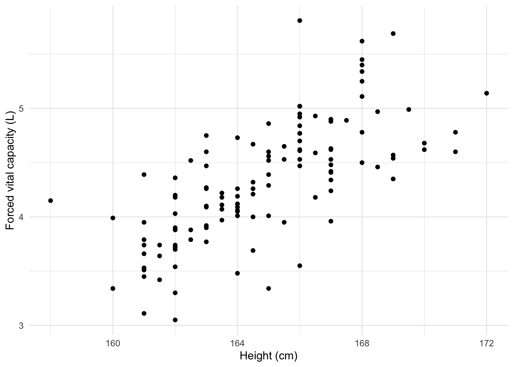
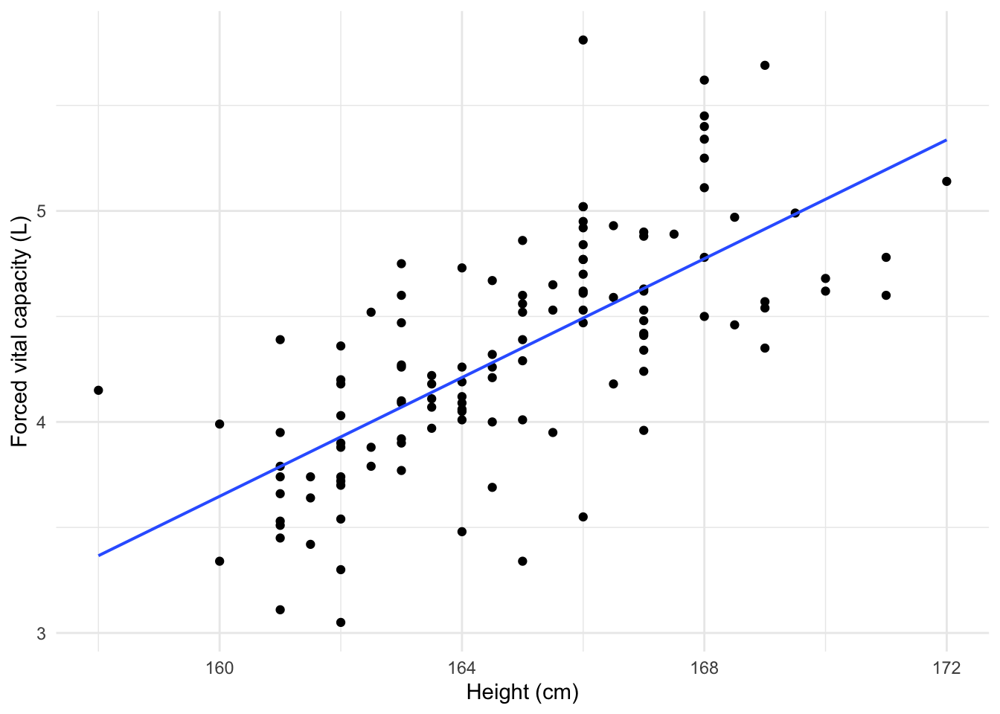
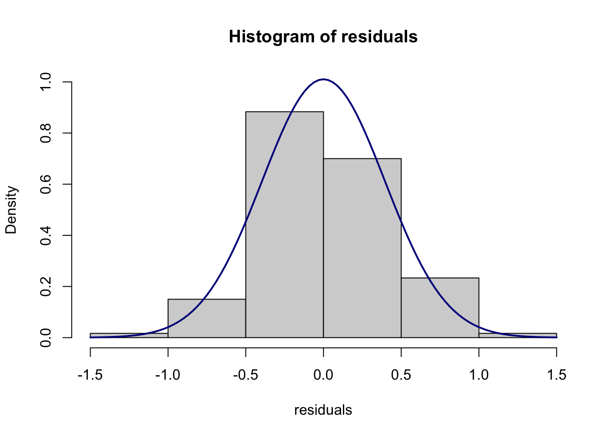
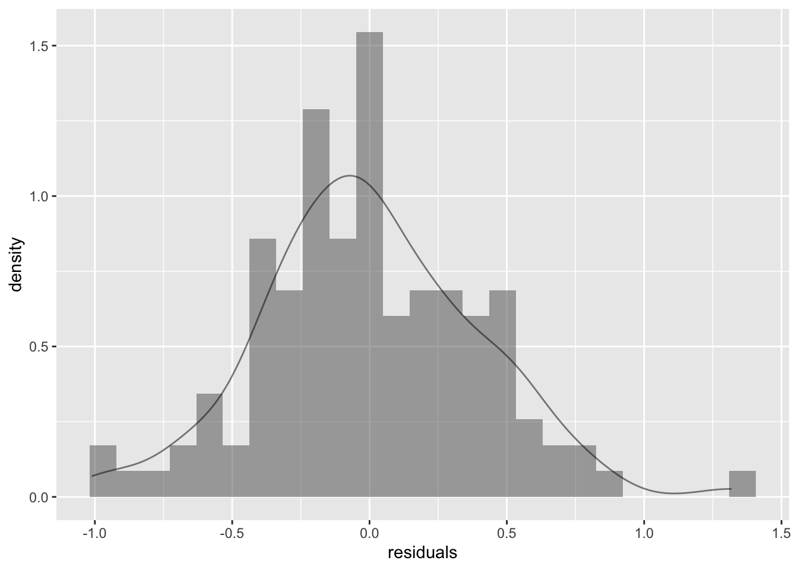

lung <- read.csv("data/examples/Example_8.1.csv")8 R notes
We will demonstrate using R for correlation and simple linear regression using the dataset Example_8.1.csv.
Creating a scatter plot
We can use the plot function to create a scatter plot to explore the association between height and FVC, assigning meaningful labels with the xlab and ylab commands:
plot(x=lung$Height, y=lung$FVC,
xlab="Height (cm)",
ylab="Forced vital capacity (L)")
To add a fitted line, we can use the abline() function which adds a straight line to the plot. The equation of this straight line will be determined from the estimated regression line, which we specify with the lm() function, which fits a linear model.
The basic syntax of the lm() function is: lm(y ~ x) where y represents the outcome variable, and x represents the explanatory variable. Putting this all together:
plot(x=lung$Height, y=lung$FVC,
xlab="Height (cm)",
ylab="Forced vital capacity (L)")
abline(lm(lung$FVC ~ lung$Height))
Or using the ggformula package, we form the basic plot using the following:
gf_point(FVC ~ Height, data=lung,
xlab="Height (cm)",
ylab="Forced vital capacity (L)") |>
gf_theme(theme = theme_minimal())
We can add an estimated linear regression line by piping the command gf_lm():
gf_point(FVC ~ Height, data=lung,
xlab="Height (cm)",
ylab="Forced vital capacity (L)") |>
gf_lm() |>
gf_theme(theme = theme_minimal())Warning: Using the `size` aesthetic with geom_line was deprecated in ggplot2 3.4.0.
ℹ Please use the `linewidth` aesthetic instead.
Calculating a correlation coefficient
We can use the corrMatrix function in the Jamovi package to calculate a Pearson’s correlation coefficient:
corrMatrix(data=lung, vars=c(Height, FVC))
CORRELATION MATRIX
Correlation Matrix
────────────────────────────────────────────────────
Height FVC
────────────────────────────────────────────────────
Height Pearson's r —
p-value —
FVC Pearson's r 0.6976279 —
p-value < .0000001 —
──────────────────────────────────────────────────── Fitting a simple linear regression model
We can use the lm function to fit a simple linear regression model, specifying the model as y ~ x where y represents the outcome variable, and x represents the explanatory variable. Using Example_8.1.rds, we can quantify the relationship between FVC and height:
lm(FVC ~ Height, data=lung)
Call:
lm(formula = FVC ~ Height, data = lung)
Coefficients:
(Intercept) Height
-18.8735 0.1408 The default output from the lm function is rather sparse. We can obtain much more useful information by defining the linear regression model as an object, then using the summary() function:
model <- lm(FVC ~ Height, data=lung)
summary(model)
Call:
lm(formula = FVC ~ Height, data = lung)
Residuals:
Min 1Q Median 3Q Max
-1.01139 -0.23643 -0.02082 0.24918 1.31786
Coefficients:
Estimate Std. Error t value Pr(>|t|)
(Intercept) -18.87347 2.19365 -8.604 3.89e-14 ***
Height 0.14076 0.01331 10.577 < 2e-16 ***
---
Signif. codes: 0 '***' 0.001 '**' 0.01 '*' 0.05 '.' 0.1 ' ' 1
Residual standard error: 0.3965 on 118 degrees of freedom
Multiple R-squared: 0.4867, Adjusted R-squared: 0.4823
F-statistic: 111.9 on 1 and 118 DF, p-value: < 2.2e-16Finally, we can obtain 95% confidence intervals for the regression coefficients using the confint function:
confint(model) 2.5 % 97.5 %
(Intercept) -23.2174967 -14.5294441
Height 0.1144042 0.1671092Plotting residuals from a simple linear regression
We can use the resid function to obtain the residuals from a saved model. These residuals can then be plotted using a histogram in the usual way:
residuals <- resid(model)
hist(residuals)
A Normal curve can be overlaid if we plot the residuals using a probability scale.
hist(residuals, probability = TRUE,
ylim = c(0, 1))
curve(dnorm(x, mean=mean(residuals), sd=sd(residuals)),
col="darkblue", lwd=2, add=TRUE)
Using ggformula, we can plot the residuals as a histogram:
gf_dhistogram(~ residuals, data=model) |>
gf_dist("norm",
params=list(mean=mean(model$residuals),
sd=sd(model$residuals)))Warning: `stat(density)` was deprecated in ggplot2 3.4.0.
ℹ Please use `after_stat(density)` instead.
gf_dhistogram(~ residuals, data=model) |>
gf_dens()